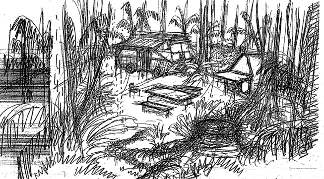
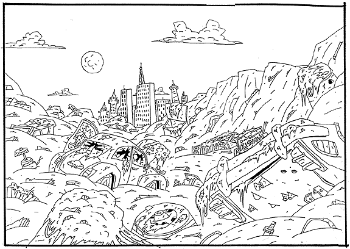
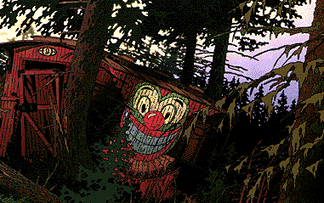

PART SEVEN:
BACKGROUNDS

The background images in animation play a crucial role in creating the environment that characters interact within.
Background artists are hired specifically to create these worlds, which usually function in the same way as sets do in live action films.
There are a few stages in creating backgrounds, the first being the rough sketch, like the one above for the jungle in "The Wild Thornberrys" (notice the Comvee).
As you can see, even in the rough sketch one gets a feeling for the atmosphere that will be part of this cartoon world.

When the rough sketches are approved, the background artists begin creating more detail in the environment and use clean lines of pen and ink to set up the scene for coloring.
Here is an example of a pen and ink background drawing above: it's the dump from AAAHH!!! Real Monsters.

The final stage in background art is adding the color.
In the early years of animation, backgrounds were painted by hand and in some cases still are.
Most of the time though, artists use computer programs such as Photoshop to fill the black and white images in with Pantone colors, like the background scene above from The Rugrats Movie.
We'll talk more about color in the next section.